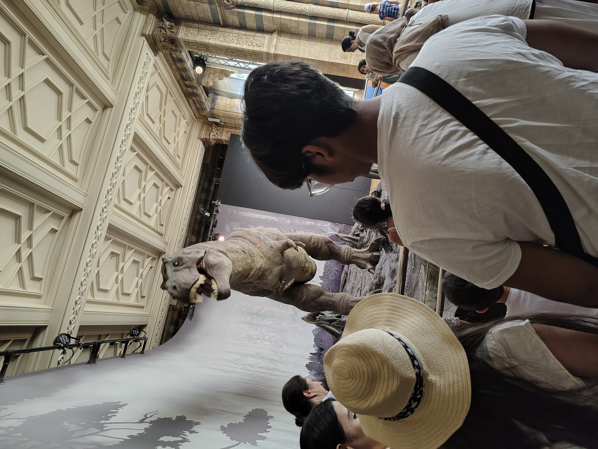
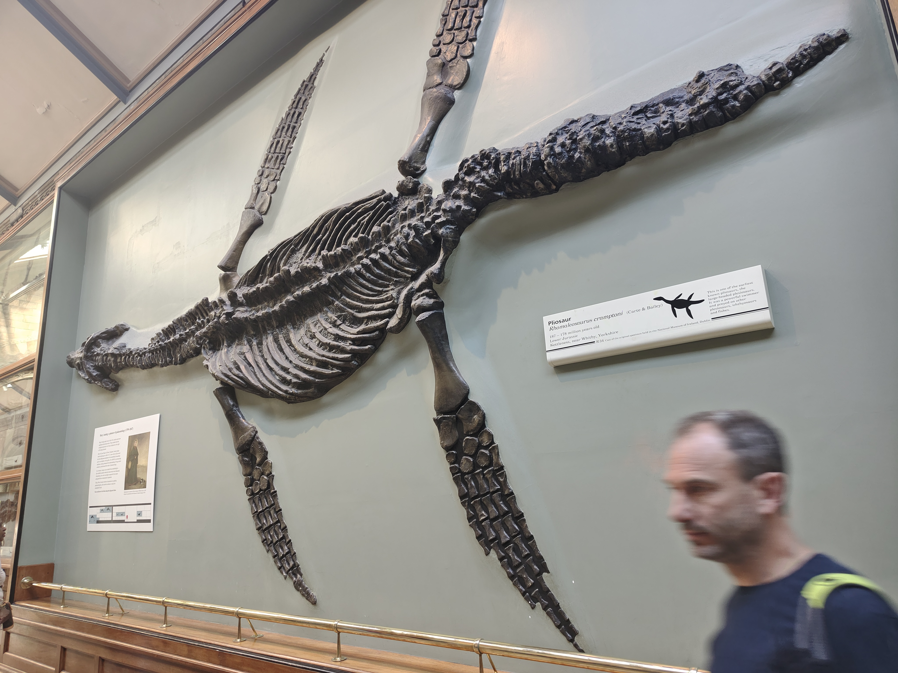
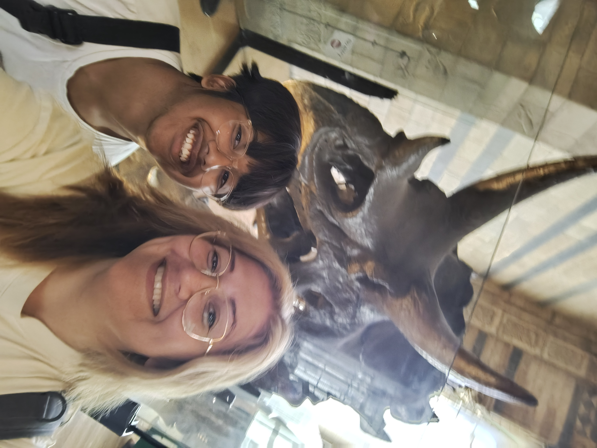
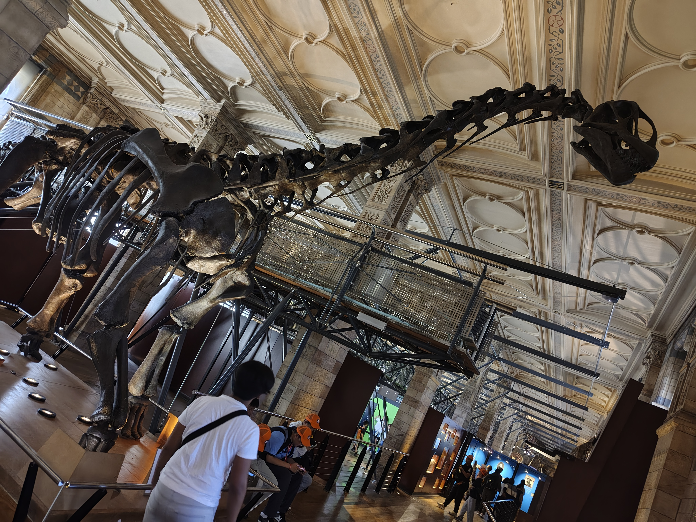
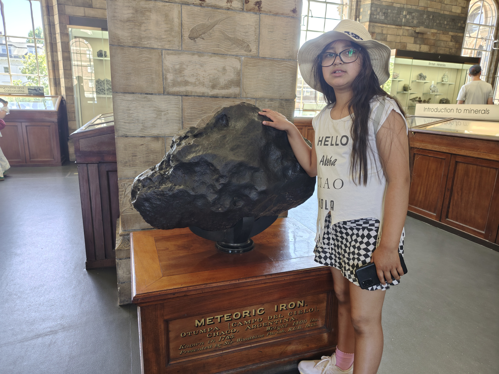

Mitt intresse för dinosaurier





Sedan jag kan minnas har jag varit intresserad av arkeologi och att hitta den första människan.
När jag läste böcker om människans historia stötte jag på dinosaurier och blev fascinerad av deras olika utseenden,storlek och deras öde.
Som liten funderade jag ofta på hur världen skulle se ut om de inte dog ut och om vi människor skulle kunna ha existera, eller hur det skulle var om vi samexisterade
Fantasin stärkets givetvis när alla Jurrasic Park filmerna kom ut på nittotalet.